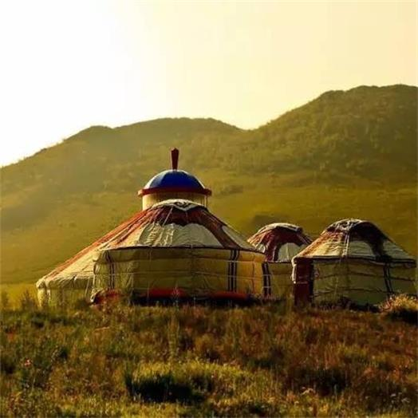

中国各地的居住建筑,又称“民居”。民居包含住宅以及由其延伸的居住环境。由于中国疆域辽阔,民族众多,历史悠久,各地的地理气候条件和生活方式不尽相同,因此,中国的民居建筑样式和风格之多在世界建筑史上也十分鲜见。
民居建筑是人们满足最基本生活需要所营建的居住性建筑，是历史上最早出现的建筑类型。我国民居建筑收环境、气候、民俗文化、经济、礼制等因素影响，在风格上和工艺做法上有较强的地域性。
中国传统民居多以院落式为主，房屋多单层也有多层建筑。山区、丘陵地区的民居依地形而建，江南水乡多临水而建，组合灵活。西北地区有窑洞式民居，福建地区有土楼式民居等等。
我们将采用图片展示的方式让您更直观的感受中国古建筑之中的民居建筑的魅力。
江南民居
凤凰古镇吊脚楼
云南傣家竹楼

北方窑洞
蒙古毡包
藏族碉楼